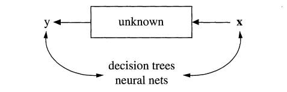
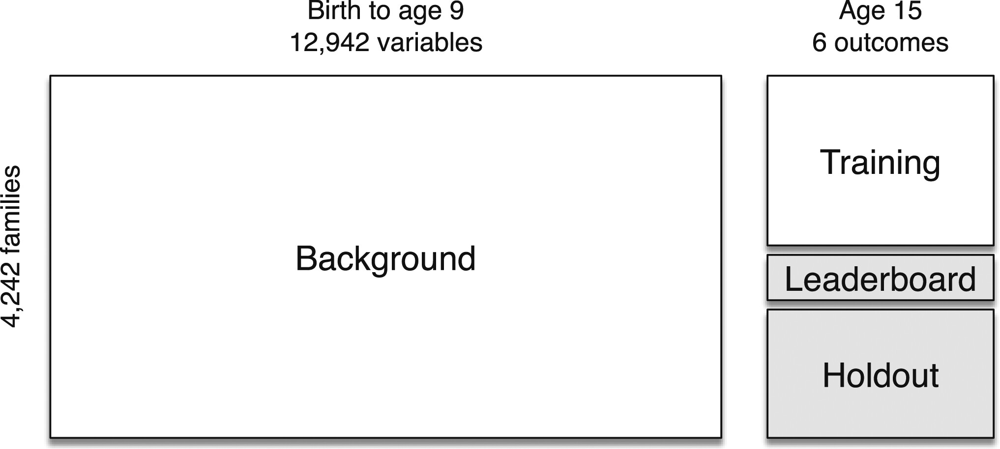
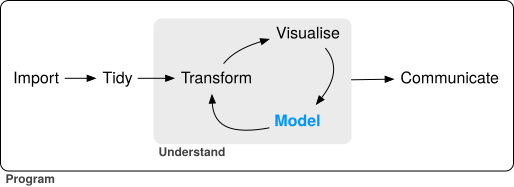
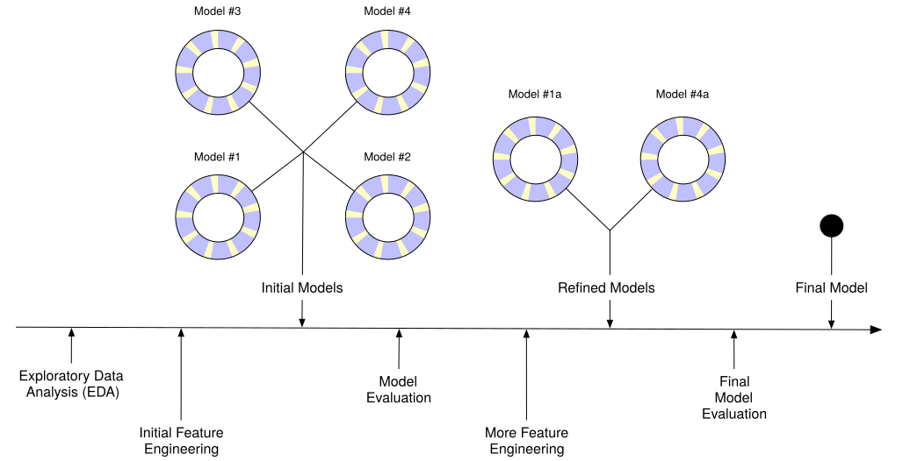

7 Prediction, Machine Learning, and AI
It’s easy to understand things that have already happened, but what about future events? A new “school” of data science, which has gained popularity in recent years, seeks not just to model relationships, but to predict outcomes. We’ll look at what this means for the social sciences.
Monday Readings:
Breiman, Leo. 2001. Statistical Science. The Two Cultures of Statistics.
Molina, Mario; Garip, Feliz. 2019. Annual Review of Sociology. Machine Learning for Sociology.
Wednesday Readings:
7.1 Data Models and Algorithmic Models
We’ve now spent some time understanding how to create and work with data, how to perform descriptive statistics, visualizations and maps, and how to model outcomes. In Statistical Modeling: The Two Cultures, Breiman argues that there is a distinct division between researchers who use data models and those who use algorithmic models. We can also think about this as a division between information/explanation and prediction.
To begin, let’s think about a process of interest. As social scientists, we might be interested in a sequence of events, like what causes job loss? (The Fragile Families Challenge asked this, and other questions in a large competition - but more on this later!). We could even map out some kind of diagram, like Breiman does, where \(x\) is represents our input variables: maybe a range of employee and employer characteristics, market features, policies and local laws, economic factors, and spatial characteristics of a place. \(y\) represents whether someone lost their job or not.
Figure 7.1: Source: Breiman, 2002
Traditionally, social scientists have tried to explain these processes using what Breiman calls data models. In other words, the social scientist might run a linear regression with all our \(x\) variables (employee education, type of occupation, whether there is a recession, etc.) and use these to explain why a person lost (or didn’t lose) their job. For instance, such a model might tell us that, on average, having a high school diploma lowers the probability of job loss by 4%, working in agriculture increases the probability of job loss by 10%, and a recession increases everyone’s probability of job loss by 5%. For any individual, we can add all of these factors and arrive at a predicted probability.
Figure 7.2: Source: Breiman, 2002
Other examples, noted by Breiman, include logistic regression and Cox models (used in survival analysis). For all of these models, there is a direct, transparent relationship between the inputs (\(x\)) and the output (\(y\)).
Algorithmic models operate differently. Rather than assuming that we can explain job loss with a linear combination of variables, the algorithmic approach assumes that there is some unknown process that predicts job loss. Maybe many things have to occur at once (recession, specific industries, specific skill levels), or maybe there are certain cutoff points that are not be obvious to researchers (for example, maybe completing 2 years of college has no effect on job loss but having 3 years lowers the probability). The process by which \(y\) is predicted could be so complicated that it is nearly impossible to know why the model predicted it (as is the case in neural networks). The algorithmic modeler doesn’t necessarily care why all of these features (or combinations of features) are important - they just care that these can make better predictions than a data model.

Figure 7.3: Source: Breiman, 2002
Why does this matter? The distinctions between these two cultures - data models and algorithmic models - have grown in recent years as social scientists think about not just explaining social processes, but predicting them, and data scientists think about not just making predictions, but explaining them. We might think that in the age of AI, we could predict lots of social outcomes with ease. But we’d be wrong. The Fragile Families Challenge used an open call (recall these from section 2) to see how well social scientists could predict individuals’ GPA, high school graduation, grit, job training, and experience with eviction and job loss by age 15. They had a trove of data from surveys over these individuals’ lives, with information on schooling, health, family members and economics, and more. However, overall, they were not able to predict these outcomes much better than data models (or random chance for that matter). This highlights some of the challenges that face social scientists: explaining processes, making accurate predictions, and finding truth in a world of big data.
7.2 Splitting Your Data, Setting Up Your Models
When making predictions (or evaluating any model), researchers often split their data into different sets. Let’s think about how this would work in a real dataset. The Fragile Families challenge included data on children from birth to age 9, all of which was already available to researchers. What wasn’t yet available to researchers (as of 2017), was data for these children at age 15. So the challenge split this data into three parts: training data for teams to modify their models, leaderboard data to evaluate teams’ predictions in real time, and finally, a holdout set to perform a final evaluation of the best models.

The data split raises an important question about the modeling process: how do researchers actually create their models? If you read a social science article, you might believe that researchers carefully ajudicate between all potential decisions prior to running their models, and then select the best one and present the results. This is rarely the case. New developments in social science research, such as pre-registration, are designed to prevent researchers from trying many possible models and only sharing the best ones (sometimes called p-hacking).
In Tidy Modeling With R, Kuhn and Silge recommend the following workflow for social scientists. It starts with importing data, and includes tidying (or cleaning) the data, then an interative loop between transforming, visualizing, and modeling the data resulting in some gained understanding. Finally, the research team communicates their findings.

Kuhn and Silge offer a second visualization for how the modeling process may look. In the figure below, the research team conducts exploratory analysis, initially “engineers features” or sets their model parameters, and then evaluates possible models, before refining them and trying the adjusted models. Ultimately, the team comes up with a “final model.”

The modeling process may look different for every research team. In most cases, there are bound to be more decisions, and more challenges, than the researchers initially anticipate. This is ok! However, because of all these decisions, researchers sometimes (intentionally or unintentionally) present only the results that look the best for their research agenda. Some have called this problem the garden of forking paths.
The “holdout” set in the Fragile Families Challenge helps to avoid issues like this. If you want to work with the Fragile Families Challenge data, you can find it here!
7.7 Problem Set 7
Recommended Resources:
Start a new document, problemset7.Rmd, in your soc10problemsets repository. (You can download a template here, but be sure to save it in your own soc10problemsets repo). Create a network based on 5 people in our class! (You can use the “class_activities.csv” file from Canvas if helpful). Using
igraph, create a network diagram based on who has worked with who in our class activities this quarter (you may want to usegraph_from_data_frame()if you read in the csv). Then plot the network. (Note: a network with only 5 people, excluding ties to everyone outside of these 5, is sufficient). Commit your changes.Choose a centrality measure, and explain how you would interpret this in the context of the class activities data. Who is/are the most central actor(s) according to this measure? Commit your changes.
Now download the IPCC co-authorship data (you can use the code included in the template). Using the IPCC co-authorship data, create a network graph of all co-authors who share at least 2 publications together, excluding those with no network ties, similar to what we do in section 6.4. Graph the data using eigenvector scores, rather than betweenness scores, to plot the vertex sizes. Does this make a difference in our interpretation of the network? Commit your changes.
Let’s say you want to give one of the IPCC authors a memo to disseminate to the others. Who would you choose? Which measure of centrality would help you arrive at your answer? Commit your changes.
Finally, plot the IPCC co-authorship data, but change the color/shape of the vertices so that these correspond to authors’ gender. Describe what you see. What conclusions can you make about authorship and gender? (Note that you will need the IPCC_cv.csv dataset. The code in the template has combined these datasets). Commit your changes.